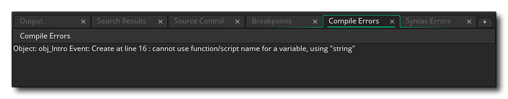

Lorsque vous programmez votre jeu, que ce soit en utilisant le code ou le glisser-déposer, il peut être très facile de faire des erreurs - utiliser les mauvaises variables, passer les mauvais arguments ou utiliser les mauvaises fonctions ne sont que quelques-unes des erreurs les plus fréquentes. ces erreurs ne sont pas toujours détectées par le vérificateur de syntaxe inclus dans l'éditeur de script / action. Cela signifie que ces erreurs ne deviendront apparentes que lorsque vous exécuterez ou compilerez votre jeu, et même alors, il peut parfois être difficile de savoir exactement ce qui ne va pas. Il peut donc être d'une importance vitale de savoir comment votre jeu fonctionne sur l'appareil choisi, ainsi que de voir quelles instances sont dans la pièce, quelles variables globales ont été créées et une foule d'autres détails.
Maintenant, vous pouvez vérifier vous-même beaucoup de ces choses en ajoutant ce que l'on appelle le "code de débogage" à vos jeux pour afficher sur l'écran les informations dont vous avez besoin, ou vous pouvez les afficher en cas d'erreur, mais C'est souvent beaucoup de travail et si vous ne savez pas où le problème est en premier lieu, cela peut prendre beaucoup de temps pour essayer votre bug. Pour cela, GameMaker Studio 2 dispose d'un mode de test spécial appelé Mode de débogage qui lancera le module de débogage, ainsi qu'un système de rapport d'erreurs complet qui affiche les messages au moment de l'exécution pour vous aider à identifier les problèmes.
Les sections ci-dessous couvrent les différentes façons de déboguer votre jeu:
Lorsqu'une erreur survient lors de la compilation et de l'exécution d'un projet, ceci est signalé avec un message dans la fenêtre de sortie des erreurs de compilation, un peu comme ci-dessous: 
La plupart des messages d'erreur du compilateur suivent le même plan, avec un message indiquant l'objet dans lequel l'erreur s'est produite, puis l'événement avec le numéro de ligne, puis enfin une brève description de l'erreur elle-même. Ce type d'informations fournies par le rapport d'erreurs est très important car il détecte et signale la syntaxe et les bogues liés au langage qui vont provoquer le crash de votre jeu fini, mais il ne signale pas de bugs plus subtils, ni ne donne de retour sur la performance. Pour ces types de choses, vous devriez utiliser le mode débogage (expliqué ci-dessous).
En dehors de ces erreurs de compilation, vous pouvez également obtenir des erreurs de syntaxe. Ceux-ci seront détectés lorsque vous ajouterez vos actions ou votre code DnD™ et s'afficheront dans la fenêtre Sortie des erreurs de syntaxe, similaire à l'image ci-dessous:
Comme pour les erreurs du compilateur, la fenêtre des erreurs de syntaxe vous dirigera vers l'objet, l'événement et les lignes spécifiques qui donnent le problème, et sera souvent affichée avec une brève explication de l'erreur.
Si vous devez vérifier les choses plus attentivement, vous pouvez lancer le jeu en mode débogage en cliquant sur le bouton d'exécution du débogage.
. Lorsque vous le faites, le module de débogage s'ouvre avec votre jeu. Ce module vous permet de surveiller comment tout fonctionne dans votre jeu, depuis la performance globale jusqu'aux valeurs de variables individuelles dans des instances individuelles. Vous pouvez trouver plus d'informations sur le module de débogage et ses possibilités et comment l'utiliser à partir de la page suivante:
Notez que lorsque vous utilisez le module de débogage, vous pouvez également ajouter des points d' arrêt à votre code ou à DnD™. Un point d'arrêt est un point dans la boucle de jeu où vous voulez que le module de débogage fasse une pause et vous laisse traverser le code du jeu une ligne à la fois. Vous pouvez ajouter des points d'arrêt à l'aide de la touche " F9 ", et ils seront affichés dans la fenêtre de sortie où vous pouvez les activer / désactiver comme requis.
Lors de l'exécution d'un jeu pour le débogage, vous pouvez également voir comment votre jeu fonctionne et obtenir un aperçu de la façon dont tout fonctionne ensemble en utilisant l'option Profil dans le module de débogage. Cela donnera des informations très détaillées sur le fonctionnement d'un jeu et sur le temps nécessaire pour effectuer des appels ou des événements spécifiques (voir la section sur le module de débogage pour plus de détails). Cependant cela nécessite que le module de débogage soit en cours d'exécution ce qui peut ne pas être ce que vous voulez, surtout si vous souhaitez tester les exécutables finaux sur les appareils etc...
Dans ces cas, et en complément du profileur, vous pouvez afficher la barre de débogage dans votre jeu, ce qui affichera beaucoup de mémoire, de puissance CPU et de puissance GPU que votre jeu utilise.
Cette barre de débogage affiche un graphique utile de l'utilisation du CPU / GPU dans la fenêtre de jeu elle-même, et cela peut être activé ou désactivé dans votre jeu en utilisant la fonction show_debug_overlay(). Cette barre est divisée en sections, chaque section étant au 1 / 60ème de seconde. Comme vous pouvez le voir sur l'image ci-dessous, la barre est composée de différentes couleurs, chacune signifiant un aspect différent de la performance des jeux, où plus la barre est grande, plus le temps requis est important et plus la performance est grande.:
- Vert - Traitement des entrées / sorties (c.-à-d. Clavier, souris, manette de jeu, mise en réseau, etc.)
- Rouge - La vitesse de mise à jour de l'événement d'étape
- Jaune - Le temps requis pour l'événement de tirage
- Orange - Mise à jour du débogage, qui n'est normalement visible que lorsque vous utilisez le module de débogage
- Blanc - Le GPU est parti au fil du temps, c'est le temps passé à attendre que le GPU termine le rendu du cadre avant que le prochain puisse commencer
- Cyan - Le temps de rendu du texte
- Gris - Le temps requis pour effacer l'écran à chaque étape du tirage
- Dark Red - Le flush du GPU, qui est le temps que prend le GPU pour effacer les images de la mémoire
En dehors des barres colorées, il y a aussi quelques valeurs en haut. Ces valeurs représentent les éléments suivants:
- FPS - Ceci est le "Frames par seconde" de votre jeu, et montre essentiellement à quelle vitesse votre jeu est en cours d'exécution. Cette valeur n'est pas fixée à la vitesse de jeu de votre jeu, et vous montre ainsi combien de "frais généraux" vous devez jouer avec. Plus cette valeur est grande par rapport à votre vitesse de jeu, plus votre jeu sera fluide et plus vous aurez de frais supplémentaires pour ajouter d'autres choses. Notez que cette valeur peut varier considérablement au cours d'une session, mais lorsque vous fermez votre jeu, la fenêtre de sortie du compilateur dans GameMaker Studio 2 affiche le minimum et le maximum ainsi que les valeurs moyennes pour cela (notez que la valeur minimale peut être négatif! Ce n'est pas un bug, mais en raison des temps de démarrage et de la façon dont le jeu est traité lors de l'initialisation).
- Texture Swaps - Ce nombre indique combien de fois votre jeu échange des textures par cadre de jeu (le temps nécessaire à GameMaker Studio 2 pour exécuter tous les événements est une coche de jeu, et le nombre de ticks par seconde est défini par la vitesse de la salle). Les textures (sprites et arrière-plans) sont stockées sur des pages de texture, et si vous avez beaucoup d'éléments d'image dans votre jeu, GameMaker Studio 2 doit permuter entre les pages de texture pour les dessiner toutes, donc si cette valeur est élevée par exemple) vous devriez vraiment chercher des moyens d'optimiser cela car cela affectera les performances de votre jeu, en particulier sur les plateformes mobiles.
- Vertex Batches - C'est le nombre de fois que le jeu envoie des lots de texture au GPU par trame de jeu, et (comme avec Texture Swaps) vous voulez que ce soit le plus bas possible. Les lots de textures sont essentiellement des paquets de données qui sont envoyés en même temps au GPU pour le rendu. Le lot est "cassé" lorsque vous changez une police, une couleur, un mode de fusion, ou tout autre statut de dessin qui affecte la façon dont les choses sont dessinées à l'échelle globale. Vous devriez donc essayer de limiter ces objets au plus petit nombre possible d'objets. un nombre élevé de lots aura un impact négatif sur les performances de vos jeux.
NOTE: les swaps de texture et les vertex batchs ne seront jamais nuls et afficheront normalement des valeurs de 2 ou 3, car même avec une pièce vide, aucun objet GameMaker Studio 2 ne doit encore dessiner et GameMaker Studio 2 objets.Avec ces outils, vous pouvez voir à quel point votre jeu est performant et quelles zones ont besoin d'être «peaufinées» pour augmenter cette performance. Vous pouvez trouver plus d'informations sur les problèmes de performance et les moyens d'optimiser votre jeu dans le Centre d'aide de YoYo Games - Optimiser vos jeux.


En tant qu'outil supplémentaire pour le débogage des jeux compilés, certains paramètres de ligne de commande peuvent être utilisés lorsque vous exécutez le dernier paquet de jeu sur Windows. Pour plus d'informations sur comment cela fonctionne s'il vous plaît voir ici.